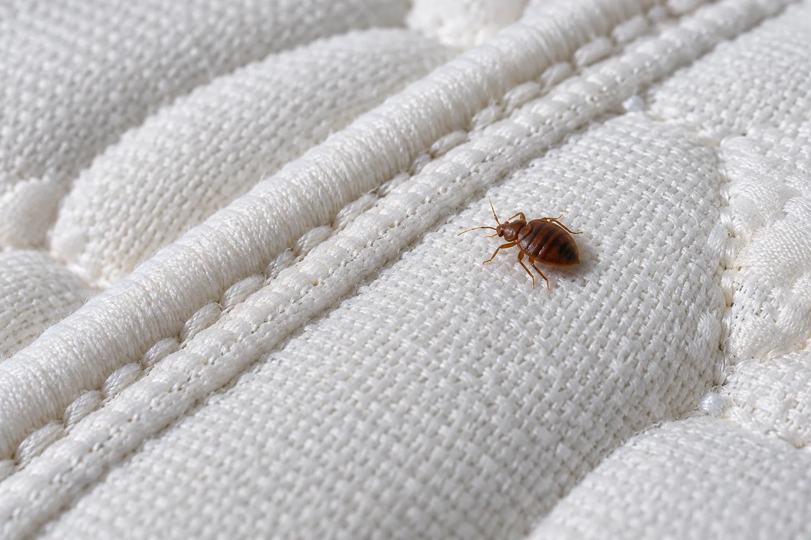

Chinches de cama
Qué revisar si sospechas de chinches
Observa costuras del colchón, base y cabecera: busca insectos, puntos oscuros o pequeñas mudas. Las marcas en la piel no bastan para identificar la plaga.
Primer paso:Toma una foto clara de los rastros o del insecto y solicita una identificación.
Ver servicio de chinchesFuente: EPA
Consejo breve
¿Por qué siguen apareciendo cucarachas aunque fumigue?
La fumigación sin tratamiento de origen es temporal. Descubre dónde se originan las colonias y cómo eliminarlas de raíz.
Tips clave:
Sella grietas en paredes, revisa tuberías con humedad y solicita orientación sobre el tratamiento adecuado.
Solicitar inspección
Consejo breve
Señales de que tienes ratas en tu bodega o cocina
La presencia de roedores puede dejar rastros en alimentos almacenados, empaques y rincones poco transitados.
Tips clave:
Busca heces en rincones, marcas de mordidas y ruidos nocturnos. Actúa de inmediato.
Solicitar inspección
Consejo breve
Cómo saber si tienes termitas antes de que destruyan tu hogar
Las termitas pueden estar comiendo tu casa por años sin que lo notes. Una revisión temprana ayuda a detectar señales de actividad.
Tips clave:
Revisa madera que suena hueca, polvo fino café en esquinas y alas de termitas aladas en ventanas.
Solicitar inspección
Prevención
Consejo breve
Hábitos para reducir la presencia de plagas
La mejor fumigación es la preventiva. Estos hábitos simples reducen drásticamente el riesgo de infestación en tu hogar.
Tips clave:
Almacena alimentos en recipientes herméticos, elimina agua estancada y sella grietas en paredes.
Agendar preventivo
Restaurantes
Consejo breve
Organiza el control de plagas de tu restaurante
Conserva un registro de las inspecciones, los servicios realizados y las observaciones de tu equipo.
Tips clave:
Mantén accesibles las constancias del servicio y consulta los requisitos aplicables a tu establecimiento.
Consultar servicio
Temporada
Consejo breve
Por qué el invierno en El Salvador dispara las plagas de zancudos y cucarachas
La temporada de lluvias crea condiciones perfectas para que las plagas se multipliquen. Aquí te explicamos cómo protegerte.
Tips clave:
Elimina todo recipiente con agua estancada y revisa desagües y patios después de las lluvias.
Fumigación preventiva